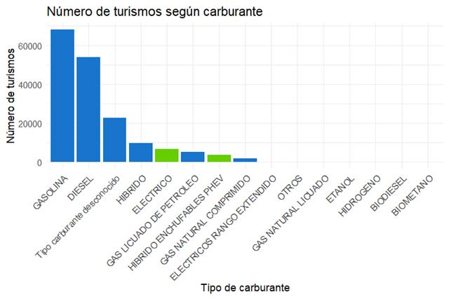
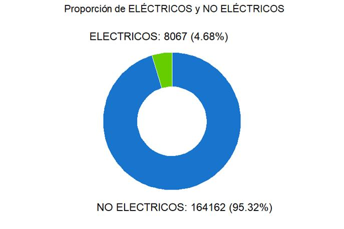
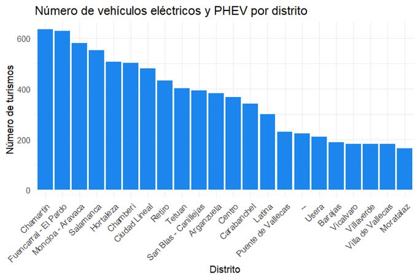
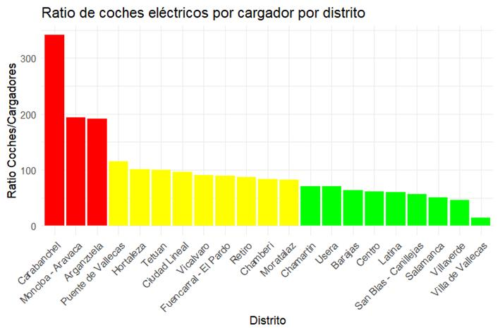
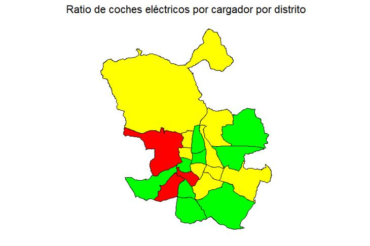
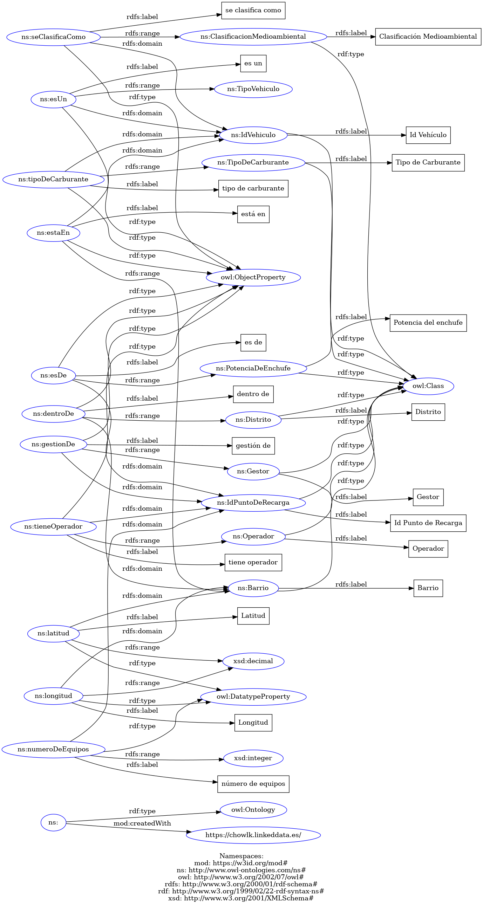

Vamos a analizar los datasets incluidos en el assignment anterior. Estos datasets tienen información sobre todos los cargadores eléctricos en la ciudad de Madrid y sobre el padrón de vehículos, también en Madrid. Este análisis se ha hecho usando la herramienta OpenRefine para el análisis de datos y el lenguaje de programación R para la elaboración de las gráficas.
Este dataset está enfocado al IVTM (impuesto de vehículos de tracción mecánica), sin embargo, nosotros lo hemos empleado para obtener información sobre los coches que están empadronados en Madrid, con lo cual, mucha información que contiene no nos resultaba útil. A continuación, describiremos la información del dataset que hemos usado:
Hay más columnas que si son de interés para la elaboración de la ontología, pero que no son necesarias para el análisis de datos.
Con estos datos hemos estudiado la proporción de turismos eléctricos, eléctricos de rango extendido e híbrido enchufable PHEV que hay en la ciudad, teniendo en cuenta que estos son los únicos que pueden usar los cargadores eléctricos.

Como podemos ver, los turismos de las características que buscamos no son muy abundantes, habiendo 4223 turismos eléctricos, 3628 turismos PHEV y 216 turismos eléctricos de rango extendido. Si visualizamos estos datos en un diagrama de anillo agrupando los vehículos eléctricos (normales o de rango extendido) y PHEV como eléctricos, y el resto como no eléctricos obtenemos lo siguiente.

Vemos que menos del 5% de turismos empadronados están electrificados y pueden beneficiarse del uso de estaciones de carga.
Ahora si agrupamos los vehículos por su distrito obtenemos lo siguiente:

Observamos que el mayor número de turismos eléctricos y PHEV se encuentran en distritos como Chamartín, con 635 turismos; Fuencarral-El Pardo, con 629 turismos; Moncloa-Aravaca, con 581 turismos y Salamanca, con 553 turismos, mientras que los distritos de Vicálvaro, Villaverde, Villa de Vallecas y Moratalaz tienen menos vehículos de estas características, con 182, 182, 181 y 165 turismos, respectivamente.
Este dataset recoge los cargadores eléctricos de alta potencia (50 kW o más) con tres mangueras ubicados en el término municipal de Madrid. De este dataset hemos usado los siguientes datos para el análisis:
Como hemos comentado con el dataset del padrón de vehículos, en el análisis solo hayamos usado el distrito en el que se ubica el cargador eléctrico porque es el único dato de interés en este apartado del assignment. A la hora de elaborar la ontología se tendrán en cuenta más aspectos, como la ubicación, las características del cargador, etc.
Como podemos ver, los distritos que tienen más cargadores de alta potencia son Villa de Vallecas, con 13 cargadores; Salamanca, con 12 cargadores; Chamartín, con 9 cargadores y Fuencarral – El Pardo, con 7 cargadores, mientras que los que menos tienen son Moratalaz, con 2 cargadores; Puente de Vallecas, con 2 cargadores; Vicálvaro, con 2 cargadores y Carabanchel, con 1 cargador.
Por último, hemos analizado la proporción de coches eléctricos por cargador que hay en cada distrito para estudiar la potencial demanda que tienen esos cargadores. Para la demanda, hemos seguido el siguiente criterio: si hay menos de 80 turismos eléctricos por cargador consideramos que la demanda es baja, si hay entre 80 y 150 turismos eléctricos por cargador, la demanda es media, y si este número es mayor a 150, la demanda es alta.

Como podemos observar, los distritos con demanda alta son Carabanchel, con 341 turismos por cargador; Moncloa-Aravaca, con 193,67 turismos por cargador y Arganzuela, con 191 turismos por cargador mientras que los que tienen la demanda más baja son Salamanca, con 50,27 turismos por cargador; Villaverde, con 45,5 turismos por cargador y Villa de Vallecas, con 13,92 turismos por cargador.
Si representamos esta información en un mapa obtenemos lo siguiente:

Nuestros datos han sido obtenidos del portal de datos abiertos del Ayuntamiento de Madrid y, por lo tanto, son ellos los poseedores de los derechos. Como distribuidores autorizados de dichos datos debemos cumplir una serie de condiciones.
Las condiciones generales permiten la reutilización de los datos para fines comerciales y no comerciales siempre que su uso no constituya una actividad administrativa pública. De esta forma, se permiten actividades como la copia, difusión, modificación, adaptación, extracción, reordenación y combinación de la información (sea cual sea su soporte y su forma de expresión). También se autoriza a la cesión gratuita y no exclusiva de los derechos de propiedad intelectual.
Condiciones generales para la reutilización
Son de aplicación las siguientes condiciones generales para la reutilización de los documentos sometidos a ellas:
Por último, se especifica que la utilización de los datos deberá realizarse bajo nuestra propia cuenta y riesgo, por lo que nos correspondería responder frente a terceros por daños que pudieran realizarse. De esta forma, el Ayuntamiento de Madrid no será responsable del uso que se haga de los datos ni tampoco de los daños sufridos o de las pérdidas económicas producidas por los mismos.
Todos los detalles están recogidos en la Ley 37/2007, de 16 de noviembre, sobre Reutilización de la Información del Sector Público.
Por lo tanto, distribuiremos estos datos bajo CC BY 4.0 con los requisitos adicionales de reutilización del Ayuntamiento de Madrid (atribución obligatoria, prohibición de desnaturalización de la información y retención de metadatos cuando existan)
Para crear las URIs hemos utilizado el namespace base http://www.owl-ontologies.com/ns# sobre el cual hemos definido las clases (por ejemplo, Barrio: <http://www.owl-ontologies.com/ns#Barrio>) y las propiedades y relaciones (por ejemplo, esUn: <http://www.owl-ontologies.com/ns#esUn>). Algo muy similar ocurre con los individuos (instancias de las clases definidas), lo que les permite tener URIs distintas que los identifiquen de forma única.
Gracias a que diferentes individuos y clases tienen diferentes rutas evitamos colisiones y nos aseguramos de que las rutas para individuos de diferentes clases nunca sean las mismas. Además, como clases y propiedades se definen de forma completamente independiente una a la otra, garantizamos que las propiedades puedan ser utilizadas para relacionar individuos de diferentes clases sin que haya ningún tipo de confusión.
A la hora de denominar los recursos hemos utilizado PascalCase para los nombres de las clases y camelCase para el nombre de las relaciones (preferentemente verbos) y propiedades.
